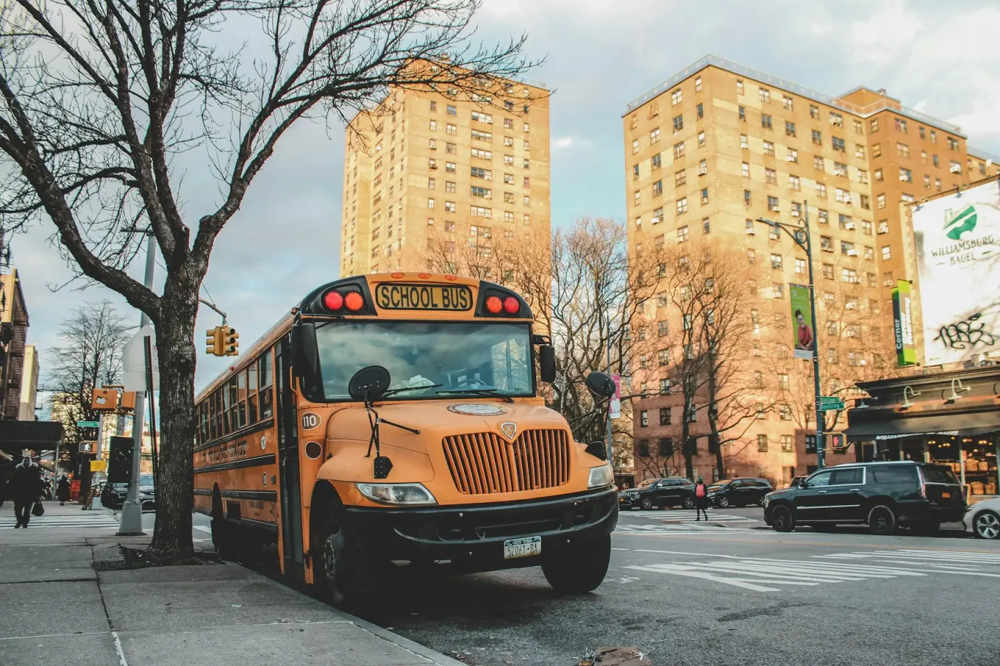
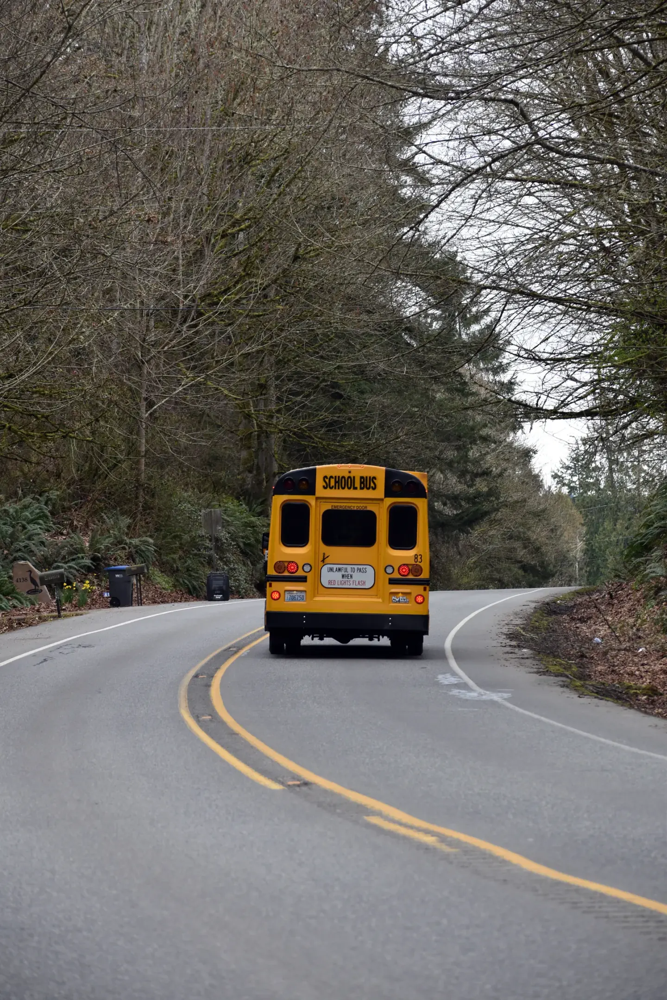

Coverage
Confirm the home area, school, travel days and morning or return direction. Door-adjacent collection depends on safe access.
A useful transport plan connects the service type, school, stop, schedule and collection arrangement.

Confirm the home area, school, travel days and morning or return direction. Door-adjacent collection depends on safe access.
Share guardian contacts, the requested start date and any accessibility or handoff needs.
A regular timetable works best when the school calendar and the assigned stop are consistent.

Activity shuttles need a confirmed dismissal time, an approved passenger list and a return collection plan.
Provide the date, destination, pickup and return windows, passenger count and trip lead.
Confirm suitable vehicle capacity, accessibility, destination parking, chaperones and emergency contacts.
A familiar place, an agreed time.
Wait for the signal, then step aboard.
A coordinated handoff at school.
The same care on the way home.
Start with the school, your area and the journeys you need.